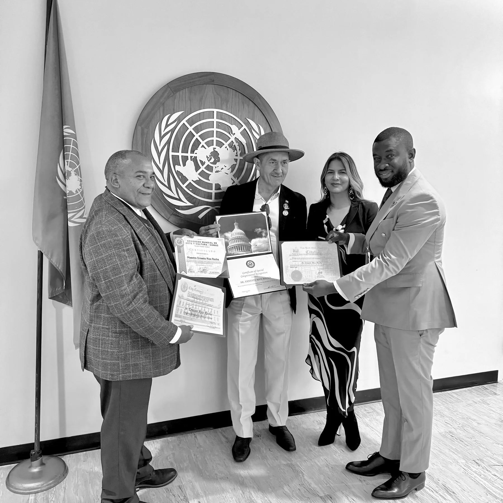

Institutional relationships, market entry and executive coordination in Ghana.
The Private Office supports international companies, investors, associations and senior executives seeking credible relationships, commercial opportunities and coordinated engagement in Ghana and selected African markets.
A disciplined point of coordination
Serious international engagement requires accurate local understanding, the right counterparts, careful preparation and consistent follow-through.
Corporate Representation
A reliable local point of coordination for approved commercial activity.
Explore service
Business Delegations
Purposeful Ghana programmes designed around business objectives, not ceremonial activity.
Explore serviceTrade and Partnership Matchmaking
Structured connections between credible organisations with a defined commercial purpose.
Explore serviceBuilt for serious organisations and executives
Every assignment begins with a clear purpose, responsible preparation and an appropriate mandate.
Clarity from first enquiry to follow-through
Clear preparation
We define the assignment, research the relevant environment and identify the people or organisations that matter.
Credible coordination
We organise communication, meetings, visits and follow-up through one accountable office.
Local perspective
We help international clients understand Ghanaian business practice, institutional structures and practical conditions.
Continuity
We maintain momentum after the first discussion and provide agreed activity reporting.
Opportunity areas
Four clear steps
Submit the objective
Tell us what your organisation is seeking to achieve in Ghana.
Initial review
We assess the objective, scope, timing, counterparties and any regulated matters.
Written proposal
Suitable assignments receive a defined scope, deliverables, timetable and professional fee.
Coordinated delivery
Work begins after written appointment, due diligence and the agreed initial payment.
Practical briefings for engagement in Ghana
Concise observations for organisations considering Ghana, preparing a visit or developing a commercial or institutional relationship.
Entering Ghana: Ten questions to answer before approaching local partners
A preparation checklist for companies moving from general interest to a credible Ghana entry plan.
Read insightPlanning a Ghana business delegation around clear outcomes
How to define objectives, select participants, structure meetings and allow enough preparation time.
Read insightFrom introduction to partnership: Why qualification and follow-through matter
A practical framework for moving beyond contact lists towards responsible commercial engagement.
Read insightBegin with a clear objective
Tell us what your organisation is seeking to achieve in Ghana. We will review the objective, scope and proposed timing before suggesting a responsible next step.